Slay the Spire insert: which trays to print
The retail-edition insert has three trays with two versions each. Print one version of each tray. The designer's photos show two layouts, and each layout is a set of three trays. The first photo shows the original trays. The later box photos show the alternative trays, which the designer added after a switch to acrylic upgrade tokens.
Small top tray: print one
98 × 90 × 15 mm. It sits on the top layer of the box, beside the long top tray.
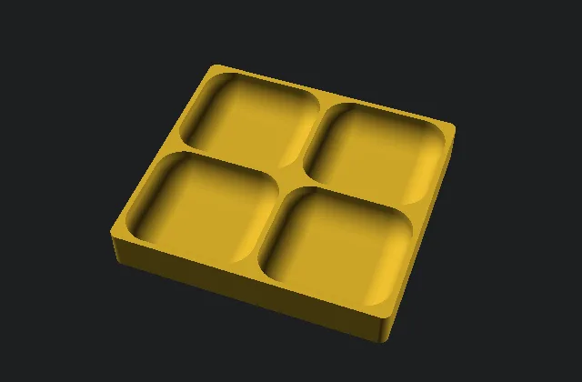
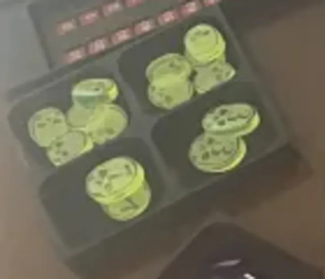
- Holds the green skull tokens only.
- The designer split them across all four pockets.
Pick this if you sort one token type by value, or keep four small types apart.
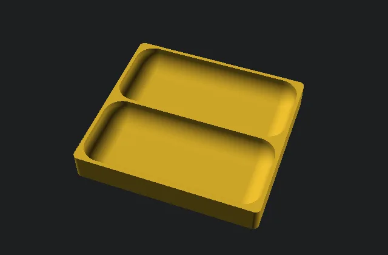
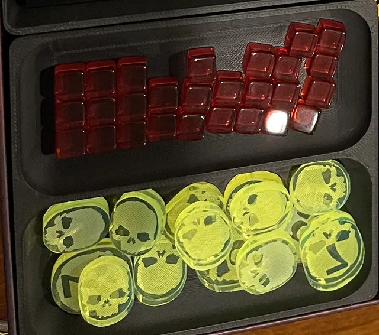
- Pocket 1: about 30 red cubes.
- Pocket 2: every green skull token.
Pick this if you want the red cubes on the top layer with the skulls.
Long top tray: print one
203 × 75 × 15 mm. It sits on the top layer, in front of the player boards.
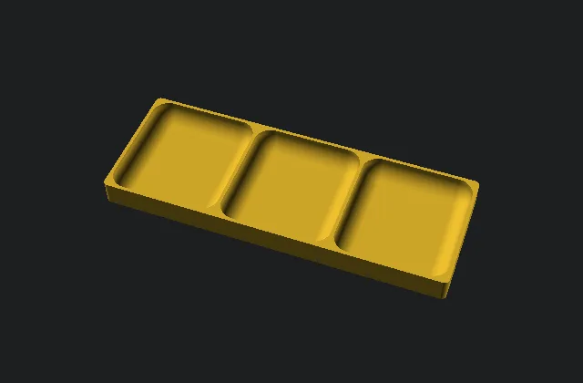
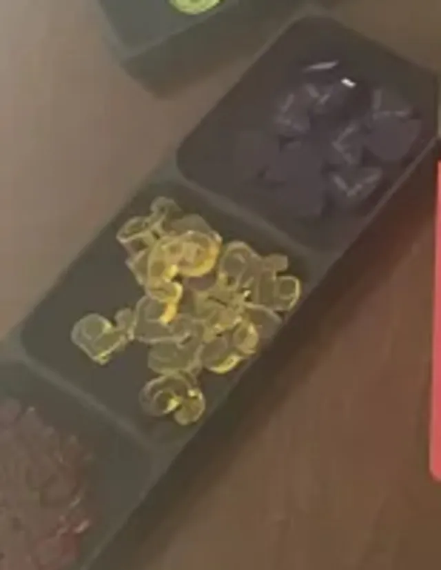
- Pocket 1: purple tokens.
- Pocket 2: yellow tokens.
- Pocket 3: dark red tokens.
Pick this if you keep the blue tokens in the 3-pocket token tray.
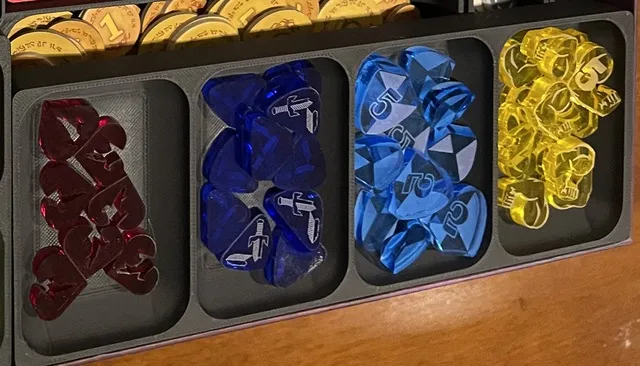
- Pocket 1: dark red tokens.
- Pocket 2: dark blue tokens.
- Pocket 3: light blue numbered tokens.
- Pocket 4: yellow tokens.
Pick this if you want every status token on the top layer, in one tray.
Token tray: print one
152 × 37.4 × 25 mm. It sits in the lower layer, beside the setup bin. The setup bin holds the dice and the gray chips.
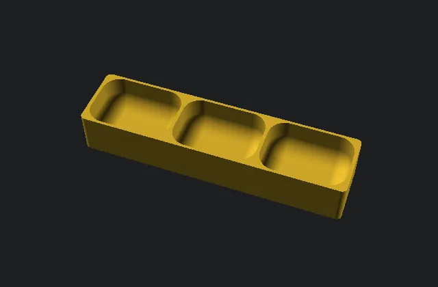
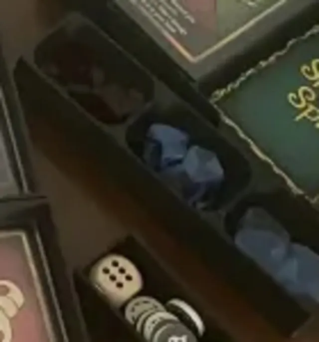
- Pocket 1: dark tokens.
- Pocket 2: dark blue tokens.
- Pocket 3: light blue tokens.
- The coins go in the filler pocket in this layout.
Pick this if you pick top_tray_2, so the blue tokens have a place.
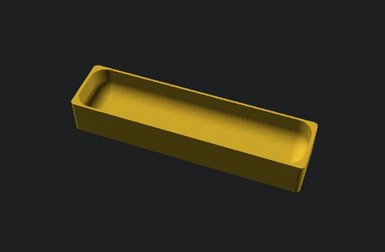
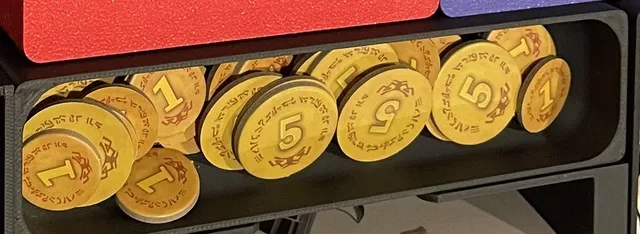
- Every gold coin, the 1s and the 5s.
Pick this if you pick the 4-pocket long tray, because it already holds the blue tokens.